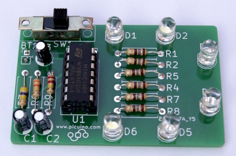
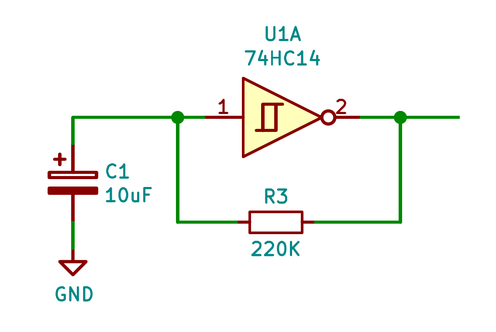
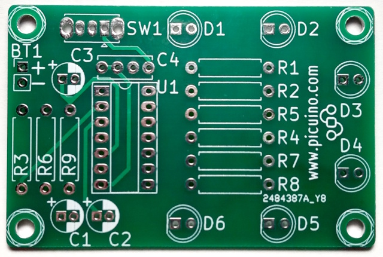
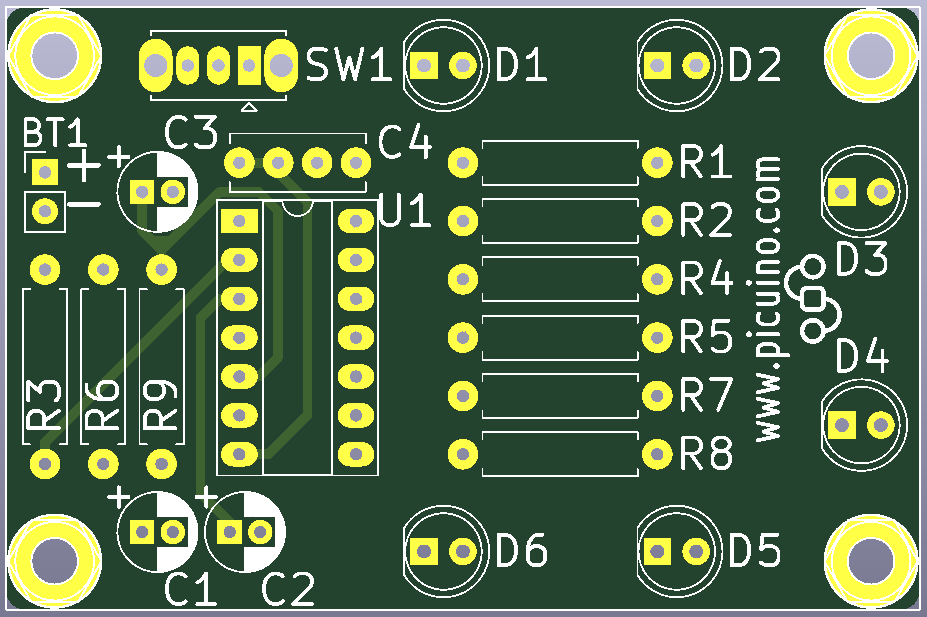
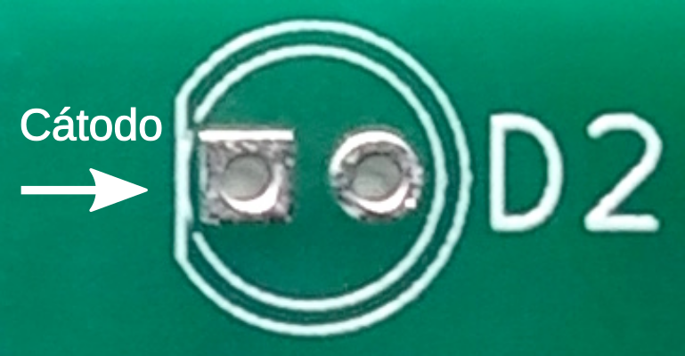

Printed circuit with LED lights¶
Design and assembly of a simple printed circuit with 6 flashing LED lights.
{kind=link}
Printed circuit board already assembled. JPG format.
{kind=link}
{kind=link}
Oscillator circuit operation¶
The circuit with flashing lights is based on an oscillator that changes its output every so often, turning the LED on and off.
{kind=link}
This oscillator circuit is made up of an inverter with a Schmitt trigger, a capacitor C1 and a feedback resistor R3.
The inverter circuit with Schmitt trigger changes its output at different input voltages. This behavior is called input hysteresis and is what allows the circuit to function as an oscillator. In the following graph we can see how the output voltage of the inverter changes for different input voltages. This rectangular figure with two horizontal lines is what the inverter has inside and indicates that it works with hysteresis.
{kind=link}
When the circuit is first turned on, the capacitor is discharged and therefore its voltage at the positive terminal is zero volts. The Schmitt inverter therefore has zero volts at its input (a logic zero) and 5 volts of positive supply at its output (a logic one). In this situation, the feedback resistor R3 gradually charges the voltage of the capacitor until it reaches 3.33 volts, a voltage from which the Schmitt inverter considers that the input is worth a logic one and therefore changes its value. output at zero volts (logical zero).
Now, the feedback resistor R3 gradually discharges the voltage of the capacitor until it reaches 1.66 volts, a voltage above which the Schmitt inverter considers the input to be a logical zero and therefore changes its output to five. volts (logical one) returning the cycle to repeat itself over and over again.
The speed of oscillation will depend on the values of the capacitor and the resistance. The larger they are, the longer it will take for the circuit to oscillate. The approximate formula for the oscillation time is:
Oscillation time = 0.8 R3 C1 = 0.8 220000 0.000010 = 1.76 seconds
LED D1 connected to the output of the oscillator through a limiting resistor R1 will turn on and off at the same speed as the oscillator.
LED D2 connected to the output of another Schmitt inverter through a limiting resistor R2 will turn on when D1 is off and will turn off when D1 is on, producing an alternative flashing.
This behavior is repeated in the three oscillators that the complete circuit has, at different frequencies since R3, R6 and R9 have different values and, therefore, different blinking speeds.
Printed circuit board (PCB)¶
{kind=link}
Design of the electrical circuit and printed circuit. KiCad format.
Gerber files for the manufacture of the printed circuit. ZIP format.
The gerber files are used to request the manufacture of the printed circuit board from a printed circuit board manufacturing company such as JLCPCB or PCBWay.
In total there is a set of 7 different gerber files, three files for the front, 3 files for the back layer and one for the board edges. There is also a file that indicates where the drills should be made.
The gerber and drill files are distributed as follows:

- Front Layer Copper Tracks (F_Cu)
- Back layer copper tracks (B_Cu)
- Front Layer Solder Mask (F_Mask)
- Back Layer Solder Mask (B_Mask)
- Screen printing of front part components (F_SilkS)
- Screen printing of rear components (B_SilkS)
- Edges to trim the plate (Edge_Cuts)
- Drill file (.drl)
{kind=link}

- Copper tracks:
- They are the conductors that connect all the components of the printed circuit board together. They appear in the drawing as yellow (without solder mask) or light green (already covered with solder mask).
- Welding mask:
- It is a layer of paint, normally green although it may have other colors, which serves to protect the copper tracks from corrosion and to avoid short circuits when carrying out the soldering process. The solder mask is not applied on top of the solder pads.
- Screen printing of components:
- It is a layer of paint, usually white, that is used to indicate the name of the circuit components and to write instructions or drawings. This layer of paint is applied with the screen printing technique and hence its name.
List of components (BOM)¶
The list of components (also called BOM or Bill Of Materials) is a list where all the components of the printed circuit appear with their quantity and reference so that they can be obtained before assembly.
The list of components may also have the purchase reference of an electronic components distributor. In the following document, the references of the distributor TME have been added.
List of components of the board with LED lights. PDF format.
List of components of the board with LED lights. SDG format.
Mounting order and position¶
When soldering the components, it is advisable to follow an order, so that the lowest components are soldered first and then the highest ones. In this way, when turning the printed circuit board over, the components can rest on the table and will not be detached from the board.
Furthermore, each component has a welding position. If we do not respect this position we run the risk of damaging the component or causing the circuit to not work.
The assembly order and position are as follows:
1. Resistances:
They don't need any particular order to work correctly, but the color coding is more elegant and easier to read when all the gold bands are aligned to the right (horizontal resistors) or up (vertical resistors) as in the image in the start of this unit.
2. Ignition switch SW1:
It will have to be mounted so that the switch lever is located outside the printed circuit board so that it is easy to operate the switch.
3. IC socket:
The socket has a small tab on the top that needs to be aligned with the tab on the component screen, also on the top of the socket.
If we insert the integrated circuit in the wrong direction (downwards) we run the risk of damaging it when current flows.
4. Capacitors:
Electrolytic capacitors have a white band on one of their two pins that indicates the negative pole of the component and must be mounted in the also white area of the printed circuit silkscreen.
It is very important that the capacitors are correctly mounted because if they receive voltage in the opposite direction they will break down and also generate gas inside that can cause them to explode.
5. LED diodes:
Diodes only conduct in one direction and do not work in the opposite direction. In the silkscreen printing of the printed circuit board, the negative leg or cathode of the LEDs is always facing to the left. It is distinguished because the circle has a chamfer and because the soldering pad is square.
When it comes to distinguishing the cathode in LED diodes, the easiest way is to look inside and look for the largest metal area, where the LED rests and which is connected to the negative pin (cathode).

{kind=link}
6. Battery cables:
It is very important to respect the order of the battery cables to avoid burning the circuit.
The red cable is positive and is connected to the upper hole (indicated with a + symbol on the silkscreen).
The black cable is negative and is connected to the bottom hole (indicated with a - symbol on the silkscreen).
Welding¶
Note
Soldering is carried out by providing material that is composed of tin and lead, so it is necessary to follow some safety procedures.
It is important to wear gloves or wash your hands properly after handling tin-lead wire.
During welding, toxic gases are produced from the antioxidant flux. These gases should not be inhaled. Welding should be done in a well-ventilated room with the windows open.
The welding technique is relatively simple, but it doesn't hurt to have some clear concepts on how to do it correctly before starting.
In the following video you can see the correct technique for soldering the components.
In the following video we can see the big difference between a good quality solder tin and a low quality one. Good quality tin is much easier to work with and leaves a bright, less oxidized and more robust solder.
The following video shows us the usefulness of flux in soldering. By keeping a soldering point hot for an excessive amount of time, the flux evaporates and the solder oxidizes and loses its shine.
- Video: when to use Flux?
Repair a weld¶
In the event that we solder a component incorrectly, we can desolder it to solder it again in the correct position. There are many techniques for desoldering, one of the simplest is to absorb the solder tin with a mesh of fine copper wires.
In the following video you can see some desoldering techniques.